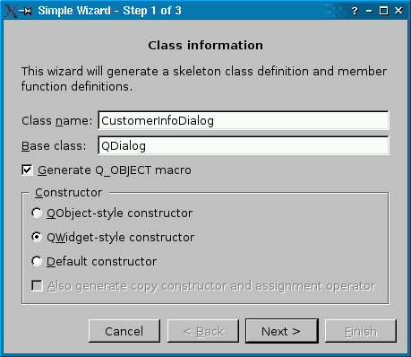
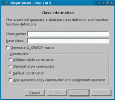
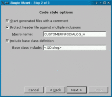
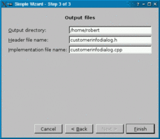

| Home · All Classes · Main Classes · Grouped Classes · Modules · Functions |
Files:
The Simple Wizard example shows how to implement simple wizards in Qt.
A wizard is a special type of input dialog that consists of a sequence of dialog pages. A wizard's purpose is to walk the user through a process step by step. Wizards are useful for complex or infrequently occurring tasks that users may find difficult to learn or do.

Most wizards have a linear structure, with step 1 followed by step 2 and so on until the last step. Some wizards are more complex in that they allow different traversal paths based on the information provided by the user. The Complex Wizard example shows how to create such wizards.
The Simple Wizard example consists of the following classes:
SimpleWizard offers a Cancel, a Back, a Next, and a Finish button. It takes care of enabling and disabling the buttons as the user advances through the pages. For example, if the user is viewing the first page, Back and Finish are disabled.
Here's the class definition:
class SimpleWizard : public QDialog
{
Q_OBJECT
public:
SimpleWizard(QWidget *parent = 0);
void setButtonEnabled(bool enable);
protected:
virtual QWidget *createPage(int index) = 0;
void setNumPages(int n);
private slots:
void backButtonClicked();
void nextButtonClicked();
private:
void switchPage(QWidget *oldPage);
QList<QWidget *> history;
int numPages;
QPushButton *cancelButton;
QPushButton *backButton;
QPushButton *nextButton;
QPushButton *finishButton;
QHBoxLayout *buttonLayout;
QVBoxLayout *mainLayout;
};
The SimpleWizard class inherits QDialog. Subclasses must reimplement the createPage() pure virtual function and call setNumPages() in their constructor. In addition, you can call setButtonEnabled() at any time to enable or disable the Next button (or the Finish button if the current page is the last page). This is useful to prevent the user from advancing to the next page before the current page is completed.
The history member variable stores the list of wizard pages that the user has seen so far. When the user presses Back, the previous page in the history list is retrieved so that the user can adjust their input when required.
First the constructor:
SimpleWizard::SimpleWizard(QWidget *parent)
: QDialog(parent)
{
cancelButton = new QPushButton(tr("Cancel"));
backButton = new QPushButton(tr("< &Back"));
nextButton = new QPushButton(tr("Next >"));
finishButton = new QPushButton(tr("&Finish"));
connect(cancelButton, SIGNAL(clicked()), this, SLOT(reject()));
connect(backButton, SIGNAL(clicked()), this, SLOT(backButtonClicked()));
connect(nextButton, SIGNAL(clicked()), this, SLOT(nextButtonClicked()));
connect(finishButton, SIGNAL(clicked()), this, SLOT(accept()));
buttonLayout = new QHBoxLayout;
buttonLayout->addStretch(1);
buttonLayout->addWidget(cancelButton);
buttonLayout->addWidget(backButton);
buttonLayout->addWidget(nextButton);
buttonLayout->addWidget(finishButton);
mainLayout = new QVBoxLayout;
mainLayout->addLayout(buttonLayout);
setLayout(mainLayout);
}
We start by creating the Cancel, Back, Next, and Finish buttons and connecting their clicked() signals to SimpleWizard slots. The accept() and reject() slots are inherited from QDialog; they close the dialog and set the dialog's return code to QDialog::Accepted or QDialog::Rejected. The backButtonClicked() and nextButtonClicked() are defined in SimpleWizard.
After establishing the signal-slot connections, we put the buttons in a horizontal layout. We put a stretch item on the left (using QBoxLayout::addStretch()) to ensure that the buttons are pushed to the right side of the dialog.
At the end, we nest the button's layout into a vertical layout called mainLayout. At this point, mainLayout isn't very useful, because it contains only one item, but we'll add one more item to it later on.
void SimpleWizard::setButtonEnabled(bool enable)
{
if (history.size() == numPages)
finishButton->setEnabled(enable);
else
nextButton->setEnabled(enable);
}
The setButtonEnabled() function is called by subclasses to enable or disable the Next button. If the current page is the last page, we enable or disable the Finish button instead.
To determine whether the current page is the last page, we check the number of pages the user has visited so far (history.size()). If that number is the same as the wizard's total number of pages (numPages), we know it's the last page.
void SimpleWizard::setNumPages(int n)
{
numPages = n;
history.append(createPage(0));
switchPage(0);
}
The setNumPages() function must be called exactly once from the subclass's constructor. It initializes numPages and creates the first page using createPage(), which we will review in a moment.
void SimpleWizard::backButtonClicked()
{
nextButton->setEnabled(true);
finishButton->setEnabled(true);
QWidget *oldPage = history.takeLast();
switchPage(oldPage);
delete oldPage;
}
When the user clicks the Back button, we update the enabled state of the other buttons, remove the last page from the history (the current page) and call switchPage() to change the page that is rendered.
Strangely enough, the argument to switchPage() is the page that was the current page before the use clicked Back (oldPage), not the page that will become the current page. The reason for this behavior will become clear when we implement switchPage().
void SimpleWizard::nextButtonClicked()
{
nextButton->setEnabled(true);
finishButton->setEnabled(history.size() == numPages - 1);
QWidget *oldPage = history.last();
history.append(createPage(history.size()));
switchPage(oldPage);
}
When the user clicks the Next button, we create a new page using createPage(). The argument to createPage() is the number of the page. The rest of the code is similar to the previous function.
void SimpleWizard::switchPage(QWidget *oldPage)
{
if (oldPage) {
oldPage->hide();
mainLayout->removeWidget(oldPage);
}
QWidget *newPage = history.last();
mainLayout->insertWidget(0, newPage);
newPage->show();
newPage->setFocus();
backButton->setEnabled(history.size() != 1);
if (history.size() == numPages) {
nextButton->setEnabled(false);
finishButton->setDefault(true);
} else {
nextButton->setDefault(true);
finishButton->setEnabled(false);
}
setWindowTitle(tr("Simple Wizard - Step %1 of %2")
.arg(history.size())
.arg(numPages));
}
In switchPage(), we hide the page that was current and remove it from the layout, assuming that there was a current page. (The first time switchPage() is called, from setNumPages(), the argument is a null pointer.)
The new current page is always the last page in the history. We insert it into the vertical layout at position 0. This ensures that the page is displayed above the wizard buttons, which are grouped in a nested layout and occpy position 1 of the outer layout.
We show the new current page and give it the focus. Then we update the state of the Next and Finish buttons based on whether the current page is the last page or not, and we update the window title.
We will now see how to subclass SimpleWizard to implement our own wizard. The concrete wizard class is called ClassWizard. It has three page:
   |
The first page asks for a class name and a base class, and allows the user to specify whether the class should have a Q_OBJECT macro and what constructors it should provide. The second page allows the user to set some options related to the code style, such as the macro used to protect the header file from multiple inclusion (e.g., MYDIALOG_H). Finally, the third page allows the user to specify the names of the output files.
Although the program is just an example, if you press Finish, C++ source files will actually be generated.
Here's the class definition:
class ClassWizard : public SimpleWizard
{
Q_OBJECT
public:
ClassWizard(QWidget *parent = 0);
protected:
QWidget *createPage(int index);
void accept();
private:
FirstPage *firstPage;
SecondPage *secondPage;
ThirdPage *thirdPage;
friend class FirstPage;
friend class SecondPage;
friend class ThirdPage;
};
The class reimplements the createPage() virtual function that we declared in SimpleWizard. It also reimplements QDialog's accept() slot.
The private section of the class declares three data members: firstPage, secondPage, and thirdPage. In addition, the FirstPage, SecondPage, and ThirdPage widgets are declared friends of ClassWizard. This will make it possible for them to access the ClassWizard's private members. In this case, we want every page to be able to access members in any other page, because the values set on one page may influence those on subsequent pages.
An alternative design would have been to declare the firstPage, secondPage, and thirdPage members public, but that would have exposed them to the outside world.
Here's the constructor:
ClassWizard::ClassWizard(QWidget *parent)
: SimpleWizard(parent)
{
setNumPages(3);
}
We call setNumPages() to tell SimpleWizard that our wizard has three pages.
QWidget *ClassWizard::createPage(int index)
{
switch (index) {
case 0:
firstPage = new FirstPage(this);
return firstPage;
case 1:
secondPage = new SecondPage(this);
return secondPage;
case 2:
thirdPage = new ThirdPage(this);
return thirdPage;
}
return 0;
}
In createPage(), we create the page requested by SimpleWizard. We also store the return value in a member variable, so we can access it later.
We don't need to worry about deleting the page later. Whenever the user presses Back, the SimpleWizard deletes the page. The next time it needs the page, it will call createPage() again. This ensures that the page will be a fresh new page with correctly initialized values.
void ClassWizard::accept()
{
QByteArray className = firstPage->classNameLineEdit->text().toAscii();
QByteArray baseClass = firstPage->baseClassLineEdit->text().toAscii();
bool qobjectMacro = firstPage->qobjectMacroCheckBox->isChecked();
bool qobjectCtor = firstPage->qobjectCtorRadioButton->isChecked();
bool qwidgetCtor = firstPage->qwidgetCtorRadioButton->isChecked();
bool defaultCtor = firstPage->defaultCtorRadioButton->isChecked();
bool copyCtor = firstPage->copyCtorCheckBox->isChecked();
bool comment = secondPage->commentCheckBox->isChecked();
bool protect = secondPage->protectCheckBox->isChecked();
QByteArray macroName = secondPage->macroNameLineEdit->text().toAscii();
bool includeBase = secondPage->includeBaseCheckBox->isChecked();
QByteArray baseInclude = secondPage->baseIncludeLineEdit->text().toAscii();
QString outputDir = thirdPage->outputDirLineEdit->text();
QString header = thirdPage->headerLineEdit->text();
QString implementation = thirdPage->implementationLineEdit->text();
...
QDialog::accept();
}
If the user clicks Finish, we extract the information from the various pages and generate the files. The code is long and tedious (and unrelated to the noble art of designing wizards), so most of it is skipped here. See the actual example in the Qt distribution for the details if you're curious.
The pages are defined in classwizard.h and implemented in classwizard.cpp, together with ClassWizard.
class FirstPage : public QWidget
{
Q_OBJECT
public:
FirstPage(ClassWizard *wizard);
private slots:
void classNameChanged();
private:
QLabel *topLabel;
QLabel *classNameLabel;
QLabel *baseClassLabel;
QLineEdit *classNameLineEdit;
QLineEdit *baseClassLineEdit;
QCheckBox *qobjectMacroCheckBox;
QGroupBox *groupBox;
QRadioButton *qobjectCtorRadioButton;
QRadioButton *qwidgetCtorRadioButton;
QRadioButton *defaultCtorRadioButton;
QCheckBox *copyCtorCheckBox;
friend class ClassWizard;
friend class SecondPage;
friend class ThirdPage;
};
The FirstPage class has a constructor that takes a ClassWizard, and a private slot called classNameChanged().
The other classes in the quadrumvirate (ClassWizard, SecondPage, and ThirdPage) are declared as friends so that they can access the page's child widgets.
FirstPage::FirstPage(ClassWizard *wizard)
: QWidget(wizard)
{
topLabel = new QLabel(tr("<center><b>Class information</b></center>"
"<p>This wizard will generate a skeleton class "
"definition and member function definitions."));
topLabel->setWordWrap(false);
classNameLabel = new QLabel(tr("Class &name:"));
classNameLineEdit = new QLineEdit;
classNameLabel->setBuddy(classNameLineEdit);
setFocusProxy(classNameLineEdit);
baseClassLabel = new QLabel(tr("&Base class:"));
baseClassLineEdit = new QLineEdit;
baseClassLabel->setBuddy(baseClassLineEdit);
...
connect(classNameLineEdit, SIGNAL(textChanged(const QString &)),
this, SLOT(classNameChanged()));
...
}
The constructor sets up the dialog. The QObject::connect() call ensures that the classNameChanged() slot is called whenever the user modifies the name of the current class. That slot is responsible for enabling or desabling the wizard's Next button.
void FirstPage::classNameChanged()
{
ClassWizard *wizard = qobject_cast<ClassWizard *>(parent());
wizard->setButtonEnabled(!classNameLineEdit->text().isEmpty());
}
We set the Next button enabled if and only if the Class name editor has some contents.
The SecondPage and ThirdPage classes are very similar to FirstPage, so we won't spend as much time reviewing them. One thing that's different with them is that they use values entered in the first page to initialize some of their fields.
Let's have a look at SecondPage. In the constructor, we have the following code:
QString className = wizard->firstPage->classNameLineEdit->text();
macroNameLineEdit->setText(className.toUpper() + "_H");
The value of the second page's Macro name field on the first page's Class name field. For example, if the class name is SuperDuperWidget, the default macro name is SUPERDUPERWIDGET_H. This is possible because of all the friends.
| Copyright © 2005 Trolltech | Trademarks | Qt 4.1.0 |